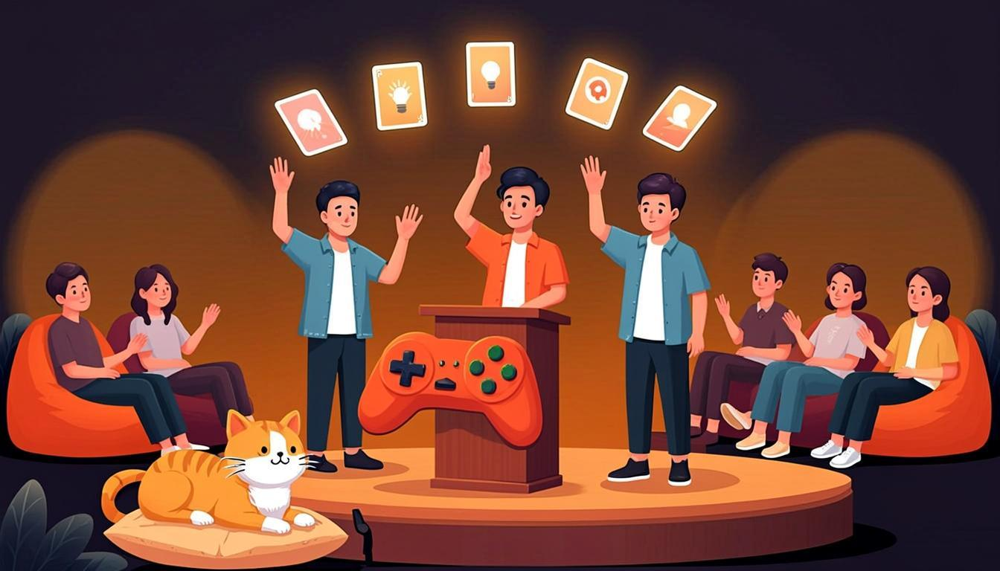

Warm-up
10 minfootball · big budgets · big decisions🎧 Listen to the questions
❓ Three questions — click a card to open the sentence starters
Listening — The Industry Debate Night
12 minaudio + comprehension
🧩 Before you listen: 10 key words
Click a word — a definition and an example will open. The Russian gloss is there to check your understanding. Listen to the recording of all ten words.
🎧 Track 1 — The Industry Debate Night
🌍 Extension — BBC 6 Minute English: What is the future of work?
From the yearly plan: What is the future of work? ↗
Task: listen for hypothetical ideas about future jobs and note 2 of them. Which jobs would survive if AI tested games as well as humans? (Answer with a second conditional — you are in training.)
Reading — Open Letter: If We Ran the Industry
10 minrules + form spottingHarbour Lights Wiki · Page 16: Open Letter — If We Ran the Industry
Category: debate prep · Owner: the whole team · Status: unrealistic on purpose
An open letter to the industry, written before the challenge. The grammar is deliberately mixed — your job is to spot each clock.
1. If we ran the industry, every studio would publish its crunch statistics — sunlight is the best patch.
2. If every QA team had a real budget, the word "crunch" would feel like a typo from another century.
3. If we had playtested the winter update with real players, we would have caught the coin exploit on day one.
4. If we had regulated our own deadlines last autumn, we would not be fixing the economy in December. (mixed)
5. We wish the industry measured success in player smiles, not only in wishlists.
6. And we would rather ship one honest game than three rushed ones. (The cats co-signed this line.)
🌍 Extension — Polygon: features
From the yearly plan — pick any feature article: polygon.com ↗
Task: find 1 hypothetical/conditional sentence and 1 wish-like phrase in the article; explain each in one sentence. Real articles mix forms exactly like the letter above — now you can see the seams.
Grammar — The Whole Multiverse on One Map
10 minconsolidation + 4 exercisesTHE MAP — every form of Module 6
- Unreal now → 2nd: If we had a real QA budget, we would test on everything.
- Unreal past → 3rd: If we had playtested with players, we would have caught the exploit.
- Past → now → mixed: If we had regulated deadlines, we would not be fixing this in December.
- Wishes: now → I wish I had… · regret → I wish we had tested… · others → I wish they would stop…
🧪 Build the map yourself (the plan's consolidation task)
- Draw the map from memory: 2nd · 3rd · mixed · wish (3 clocks) · would rather.
- Invent one fresh example per cell — game dev only, no textbook coffee.
- Mark your danger cell with a star — that is the part the test will tease.
- Check against the mini-table below: did your examples pass?
⚙️ Mini-table — name the clock
| Sentence | Why? |
|---|---|
| If we ran the industry, every studio would publish its crunch stats. | Unreal present → second. |
| If we had playtested with real players, we would have caught the exploit. | Unreal past, both halves past → third. |
| If we had regulated deadlines, we would not be fixing this now. | Past cause, present result (now) → mixed. |
| We wish the industry measured success in player smiles. | A wish about now → wish + past simple. |
| I wish my cat would stop moderating the debate. | Another creature's behaviour → wish + would. |
| We would rather ship one honest game than three rushed ones. | A choice → would rather + bare infinitive. |
🎬 Video — BBC Learning English: A review of conditionals (BBC English Class)
🔊 Shadowing — speak along with the speaker
Track A — the debate's rules, Track B — wishes and choices. Listen to a sentence → repeat it out loud in the pause. Two loops per track.
Speaking Challenge №2 — the main section of the lesson
15 mingoal: 3 minutes, no paper🎙 Challenge — "If I ran the game industry" 3 minutes
Structure that works: rule 1 (a dream — second conditional) → rule 2 (a law with a budget) → a regret that motivates the rules (third conditional) → a consequence living now (mixed) → one honest wish to close. Record the best take.
🎙 Debate round — sell the impossible absurd scenario
The teacher (or a friend, or the cat) proposes an absurd scenario — "you must convince a publisher to fund a game about QA paperwork" — and you develop it through would / would have for two minutes. No refusal allowed: in the multiverse, everything ships.
🎙 Round 3 — Error review and the priority list (the plan's core drill)
Review the mini-test results and your recordings from Lessons 21–23. Build your own "priority constructions to repeat" list of 3 items — say each aloud with your weakest example, then promise the fix: I wish I had practised mixed conditionals → So this week I will write five.
⚡ Speed Drill — one clock every 5 seconds
Open a card and instantly say the sentence in the required form — this is the test's rhythm, in rehearsal.
Module Test 6 — 15 minutes
15 items + 1 speaking taskno peeking at the rules🎙 Part 4 — Speaking: "Continue the rule" (record it)
Three prompts. For each: say one or two full sentences — a dream, a regret or a wish — then click the card to compare with the model.
Homework
≤ 30 minutes in total🧑🏫 Teacher notes
Goal: consolidate Module 6 — the student switches between second, third, mixed and wish-forms on demand inside one monologue, and measures the result honestly in Module Test 6.
Suggested flow: Warm-up: football questions push two clocks per answer → Listening: the debate night finds one dream, one regret, one wish → Reading: the open letter is a form-spotting exercise in disguise → Grammar: the student draws the map from memory (the plan's consolidation task) before looking at the mini-table → Speaking: the Challenge is recorded once, self-scored against the plan's criteria, then the debate round loosens fluency → Test: 15 written items + 1 recorded task → Homework: the optional recital of the six wishes from Lesson 23.
Success criteria: the Challenge — 3 minutes, no paper, 4+ second conditionals, 2+ third, 1 wish, no module-slip in any of the five classic traps; Test 6 — 70%+ written with all three parts attempted.
Error pocket (the five the test hunts): would in the if-half · would catch for an unreal past result · I wish I have · I wish I would about yourself · would rather to test. Every slip found in Round 3 goes to the priority list with a promised fix.
Threads: the debate rules return as genre conventions in Module 9 (reported speech: "she said every studio would publish its crunch stats"); the six-wish recital from Lesson 23 opens this lesson; Module 7 replaces dreams with duty — must, have to, should — and will keep testing conditionals in disguise ("you must back up the build if you want to sleep").